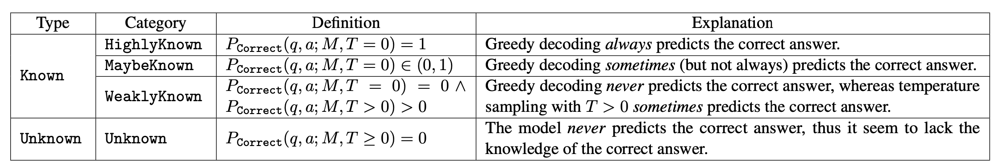
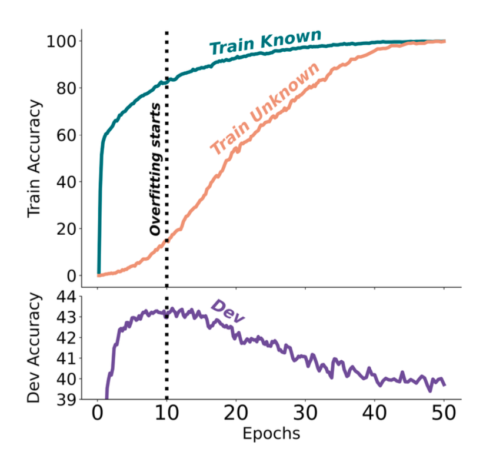
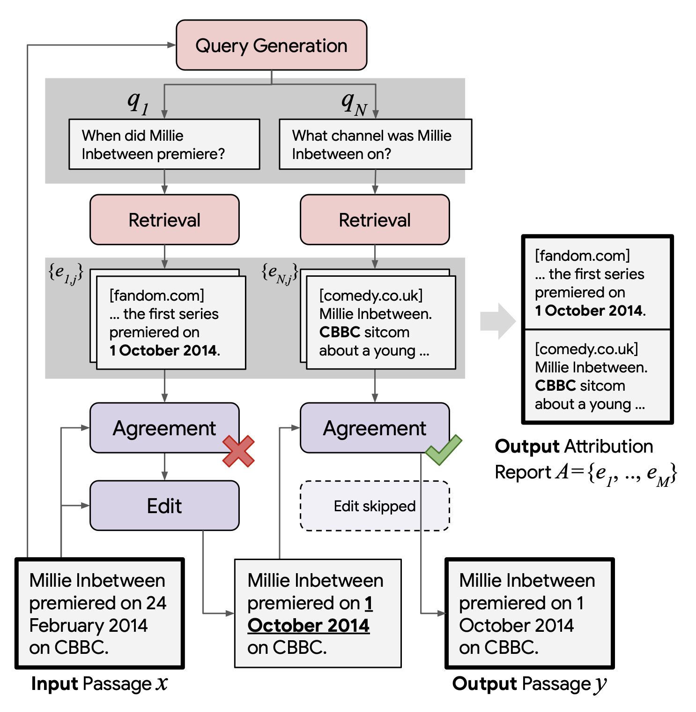
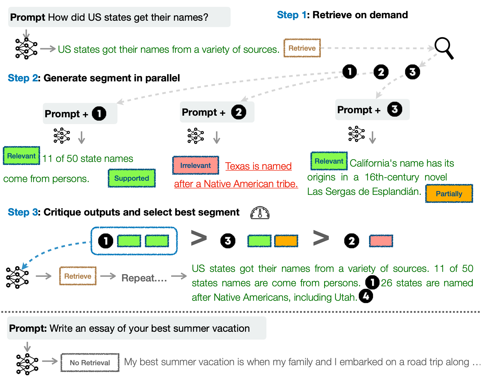
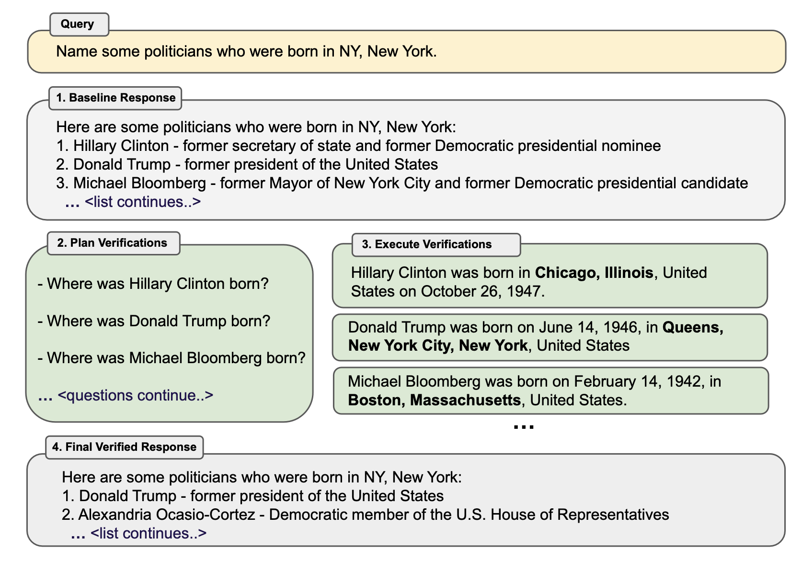

Extrinsic Hallucinations in LLMs
- Problem setup: what counts as extrinsic hallucination?
- Why hallucinations happen
- Measuring factuality with atomic claims
- Detecting unsupported claims and uncertainty
- Inference-time mitigation: retrieve, verify, revise
- Training models for factuality and attribution
- Practical synthesis
1. Problem setup: what counts as extrinsic hallucination?
Hallucination in large language models is best treated as a grounding problem: the model produces a fluent answer, but some claims cannot be verified against the source context or external world knowledge. This note focuses on extrinsic hallucination, where the output introduces unsupported factual content beyond the available evidence. That is different from an in-context inconsistency, where the model contradicts information already present in the prompt.
The desired behavior is therefore not simply “always answer.” A factual system should answer when evidence supports the answer, cite or expose the evidence when possible, and abstain or express uncertainty when the question cannot be answered reliably.

2. Why hallucinations happen
Pre-training data is incomplete, noisy, stale, and sometimes contradictory. A model may have seen false statements, missed rare facts, or learned a fact that became outdated after training. Even when the model has relevant knowledge, next-token prediction can favor a plausible continuation over a verified statement.
Fine-tuning does not automatically solve this. Gekhman et al. (2024) show an important failure mode: fine-tuning on new or unfamiliar factual knowledge can increase hallucinations, especially when the model has not robustly internalized the new knowledge. In other words, a model can become more confident in a domain without becoming more reliably factual.

3. Measuring factuality with atomic claims
Long-form answers are difficult to grade as a single unit. A better approach is to decompose a response into atomic facts, verify each claim, and aggregate the result. This is the central line from early factuality benchmarks to modern long-form factuality evaluation.
FActScore (Min et al., 2023) makes the atomic-fact idea explicit: split a biography-like answer into small factual propositions and measure the fraction supported by reliable sources. SAFE and LongFact (Wei et al., 2024) extend this logic with search-augmented checking and long-form prompts.
A simplified view is:
$$\text{Factual Precision} = \frac{\#\text{ supported atomic facts}}{\#\text{ generated atomic facts}}.$$

4. Detecting unsupported claims and uncertainty
Sometimes we do not have a complete retrieval or search pipeline. Sampling-based methods exploit the model's own uncertainty: if multiple sampled answers disagree, the original answer is more likely to contain unsupported claims. SelfCheckGPT (Manakul et al., 2023) follows this black-box idea and checks whether generated passages are consistent with other samples from the same model.
Another line asks whether models know when they do not know. Calibration work such as Kadavath et al. (2022), along with benchmarks like TruthfulQA and SelfAware, evaluates whether model confidence tracks correctness and whether the model can avoid answering false-premise or unanswerable questions.


5. Inference-time mitigation: retrieve, verify, revise
Retrieval-augmented generation is the baseline mitigation: bring evidence into the context before answering. But retrieval alone is not sufficient; the model may ignore evidence, overgeneralize from it, or cite it incorrectly. Stronger systems add verification and revision.
RARR (Gao et al., 2022) represents a retrieve-and-revise loop: identify claims, search for evidence, and edit unsupported content while preserving the useful parts of the original answer. Self-RAG (Asai et al., 2024) internalizes this workflow by training the model to decide when to retrieve, judge whether retrieved evidence is useful, and critique whether the output is supported. Chain-of-Verification (Dhuliawala et al., 2023) uses a model-only draft-check-revise pattern: generate an initial answer, plan verification questions, answer those questions independently, and then revise.



6. Training models for factuality and attribution
Post-generation checking can reduce risk, but it is expensive and imperfect. Another strategy is to train models to prefer answers that are grounded in evidence and expose their sources. Attribution-focused systems such as WebGPT and GopherCite represent this direction: the model is not only rewarded for answering correctly, but also for making the answer auditable through supporting evidence.
7. Practical synthesis
Main takeaway: hallucination mitigation is not a single trick. It is a system design problem spanning data quality, evaluation, retrieval, uncertainty estimation, post-generation verification, and training.
- Short factual QA: use retrieval, evidence display, and abstention when evidence is weak.
- Long-form generation: decompose outputs into atomic facts, verify them with search or trusted sources, and revise unsupported claims.
- Production systems: combine RAG, citations, calibration, monitoring, and factuality-oriented training rather than relying on prompting alone.
References
- Gekhman et al. (2024). Does Fine-Tuning LLMs on New Knowledge Encourage Hallucinations?
- Min et al. (2023). FActScore: Fine-grained Atomic Evaluation of Factual Precision in Long Form Text Generation.
- Wei et al. (2024). Long-form Factuality in Large Language Models.
- Manakul et al. (2023). SelfCheckGPT: Zero-Resource Black-Box Hallucination Detection for Generative Large Language Models.
- Kadavath et al. (2022). Language Models Mostly Know What They Know.
- Gao et al. (2022). RARR: Researching and Revising What Language Models Say, Using Language Models.
- Asai et al. (2024). Self-RAG: Learning to Retrieve, Generate, and Critique through Self-Reflection.
- Dhuliawala et al. (2023). Chain-of-Verification Reduces Hallucination in Large Language Models.